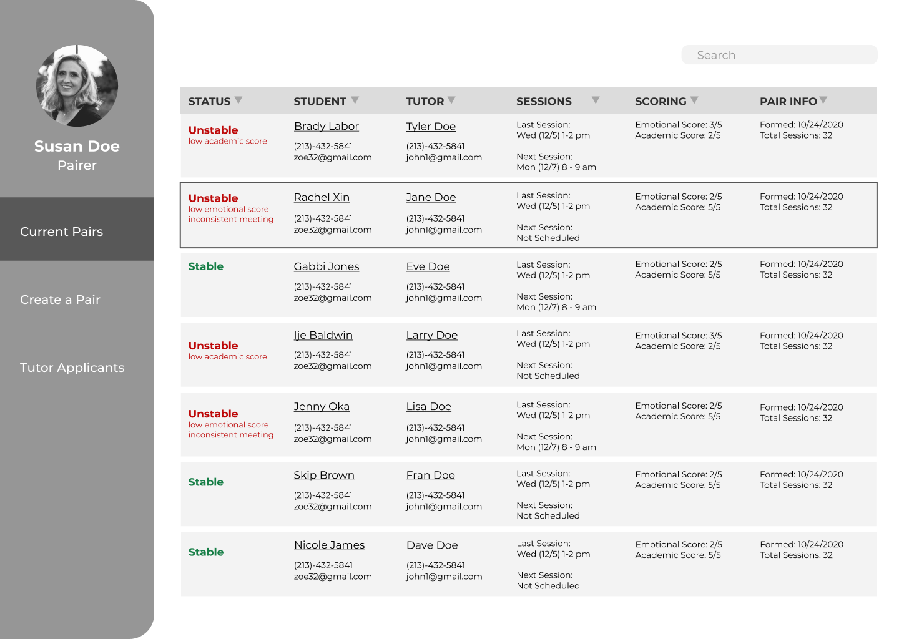

A Functional Prototype

An early sketch of the Pair Monitoring Tab
One of our primary concerns in creating our prototype was that it could be immediately implemented by Pandemic Professors, given their lack of developmental resources. To achieve this we used free groupware within the google suite, including Forms and Sheets. Our functional data center could perform many different functions that assisted with Pandemic Professors’ day-to-day activity. Among its functions, the data center can
- Track all new tutor applicants
- Automatically generate pair recommendations between tutors and students
- Collect all feedback form data on a pair
- Alert Pandemic Professors when a pair is struggling based on feedback form data
- Maintain a repository of all current and past pairs, including historical information on why a tutor or student’s past pairing was disbanded.
Additional Deliverables
Along with this data center we provided our suite of new forms that feed seamlessly into the data center and incorporate the core principle of generating empathy between the tutor and student.
Finally, we wrote a comprehensive manual to accompany our forms and data center so that Pandemic Professors staff could learn how to use these tools, as well as troubleshoot them in the future. The manual further explains our rationale in design choices throughout the prototype and provides links to the various forms and sheets themselves for easy reference.
Finally, we wrote a comprehensive manual to accompany our forms and data center so that Pandemic Professors staff could learn how to use these tools, as well as troubleshoot them in the future. The manual further explains our rationale in design choices throughout the prototype and provides links to the various forms and sheets themselves for easy reference.